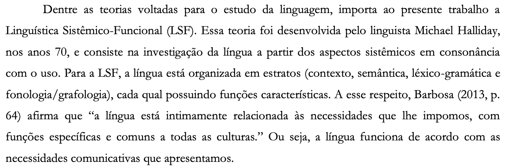
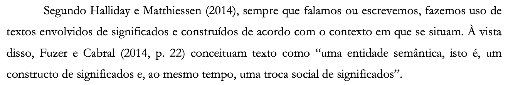
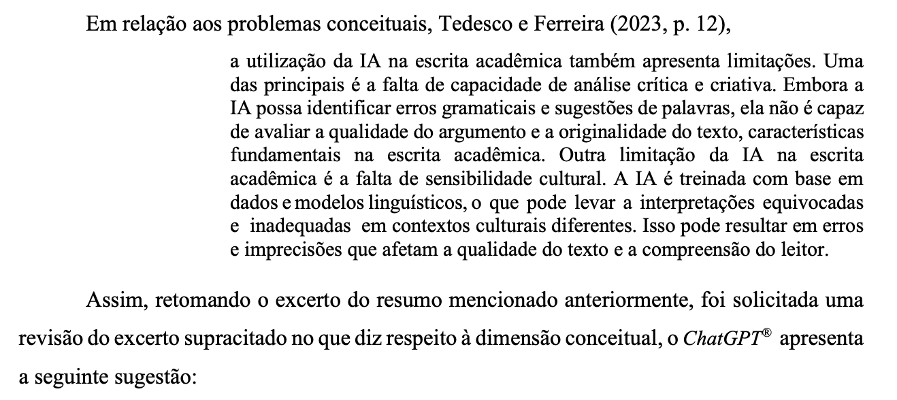
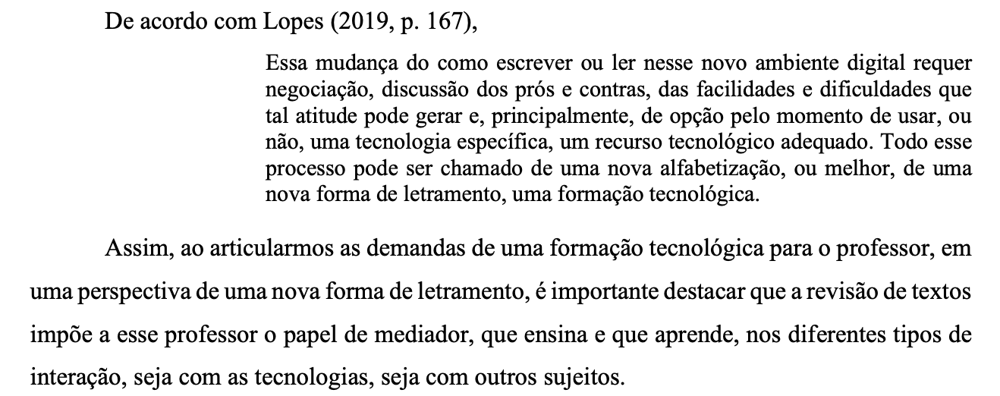
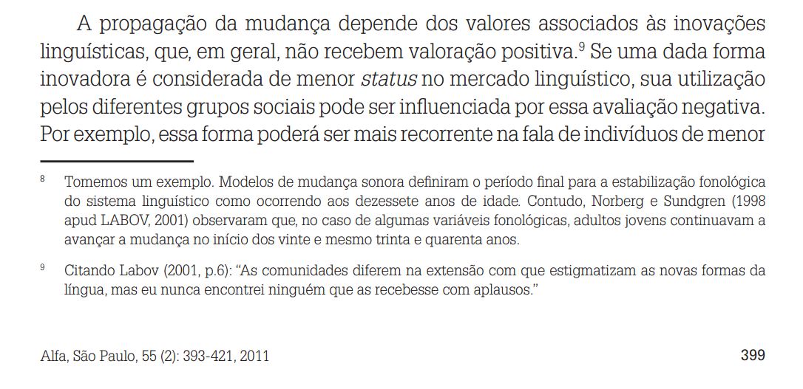
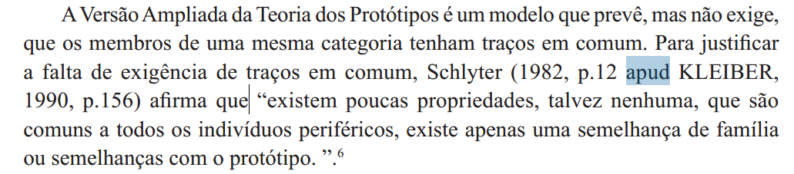
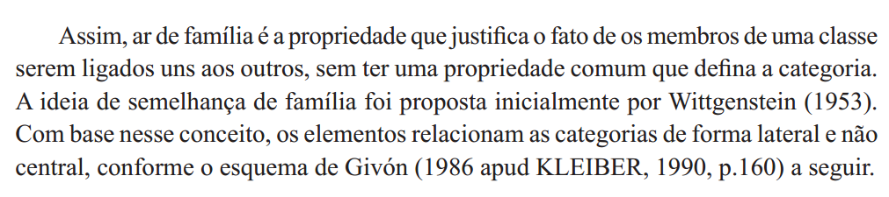
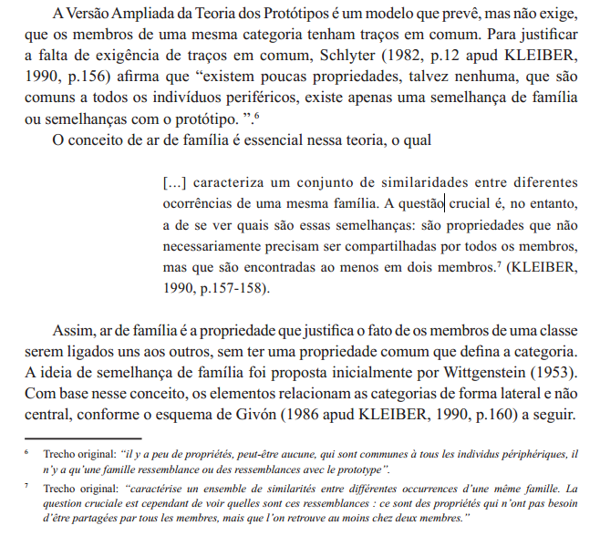
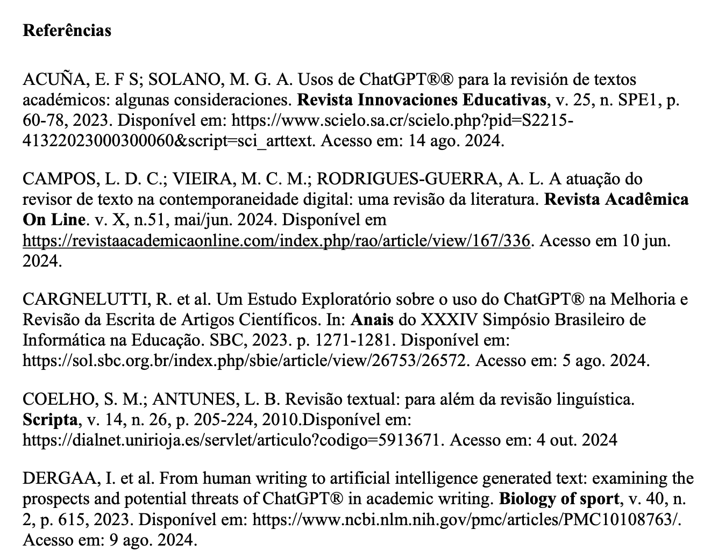

8 Como fazer paráfrases, citações e referências?
Roteiro de aula elaborado no RStudio com o auxílio da inteligência artificial ChatGPT, revisado e avaliado pelo autor antes de sua publicação.
8.1 Contextualização
A escrita acadêmica exige que todas as ideias, dados e argumentos que não são de autoria do(a) escritor(a) sejam devidamente atribuídos às fontes de onde foram extraídos. Saber aplicar corretamente citações e referências é essencial para garantir a transparência, a credibilidade e a honestidade intelectual do trabalho acadêmico.
Ao final deste encontro, espera-se que você seja capaz de:
- Compreender as diferenças entre citação direta, indireta e de citação, aplicando corretamente as normas da ABNT;
- Elaborar paráfrases e citações com o uso apropriado de verbos dicendi, respeitando o sentido original do texto original;
Leituras indicadas:
Citações diretas e indiretas (p. 89-97), capítulo do livro Leitura e escrita acadêmicas, de Nádia Studzinski Estima de Castro e colaboradores. Disponível na Minha Biblioteca.
NBR 10520:2023 e NBR 6023:2018. Disponíveis no SIGAA.
8.2 Leitura em foco
A escrita acadêmica requer argumentos fundamentados cientificamente, não admitindo senso comum ou simples opinião. O argumento científico autoral depende de pesquisa em fontes confiáveis e relevantes, e de paráfrase honesta. (Castro et al, 2019, p. 7 - destaques meus).
Paráfrase
(…) a paráfrase corresponde à transcrição livre de um texto que foi consultado. (…) O objetivo da paráfrase é apresentar a mesma ideia, mas com uma construção frasal diferente. (…) Assim, a paráfrase funciona como uma tradução das ideias originais para uma linguagem mais acessível. (Castro et al, 2019, p. 89-90).
- Paráfrase não é cópia literal, mas reescrita com outras palavras;
- A ideia central do texto original deve ser mantida;
- Pode incluir verbos dicendi, configurando citação indireta;
- Deve indicar a fonte (autor e ano), mesmo sem número de página.
Exemplo 1
Texto original
As pesquisas descritivas têm como objetivo primordial a descrição das características de determinada população ou fenômeno ou, então, o estabelecimento de relações entre variáveis. São inúmeros os estudos que podem ser classificados sob este título e uma de suas características mais significativas está na utilização de técnicas padronizadas de coleta de dados, tais como o questionário e a observação sistemática (Gil, 2002, p. 43).
Texto parafraseado
Conforme argumenta Gil (2002), as pesquisas podem ser classificadas em diferentes tipos. Entre elas, temos a pesquisa descritiva, utilizada neste trabalho de pesquisa com o objetivo de apresentar as características de determinada população. O autor afirma que múltiplos estudos podem ser classificados nesse tipo de pesquisa, mas é preciso ter atenção à técnica que é padronizada para o processo de coleta de dados, conforme realizado nesta pesquisa.
Estratégias de parafraseamento no exemplo 1
| Estratégia utilizada | Explicação | Exemplos ou observações |
|---|---|---|
| Uso de verbos dicendi | Introdução do discurso alheio com verbos que indicam fala ou pensamento. | “argumenta”, “afirma” |
| Reorganização da estrutura textual | Mudança na ordem das ideias do texto original para evitar cópia literal. | O trecho que aparece no início do original é deslocado para o meio da paráfrase. |
| Inclusão de conectores e coesão | Emprego de expressões que conectam ideias e organizam a progressão textual. | “Entre elas”, “conforme realizado nesta pesquisa” |
| Contextualização autoral | Inserção de elementos que situam o conteúdo no projeto do autor do texto acadêmico. | “utilizada neste trabalho de pesquisa” |
| Evitação de cópia literal | Reformulação das frases com outras palavras, evitando repetições do texto-fonte. | Mantém apenas termos técnicos essenciais (ex.: técnica padronizada). |
| Preservação do sentido original | Fidelidade ao conteúdo e à intenção do autor citado, mesmo com mudanças na forma. | O conceito de pesquisa descritiva e suas características permanece íntegro. |
Exemplo 2
Texto original
Ler significa conhecer, interpretar, decifrar. É por meio da leitura que a maior parte dos conhecimentos é obtida, possibilitando a ampliação e o aprofun-damento do saber em determinado campo cultural ou científico. Isso faz da leitura um dos fatores mais decisivos para o estudo. Ela é imprescindível em todos os tipos de investigação científica, permitindo a obtenção de informações básicas e específicas (Lozada; Nunes, 2018, p. 41).
Texto parafraseado
Lozada e Nunes (2018) dizem que a leitura possibilita a obtenção de conhecimento e o aprofundamento dos saberes culturais e científicos. As autoras indicam que esse é um elemento decisivo para o estudo, pois com a leitura é possível interpretar e decifrar para a obtenção de informações básicas e específicas.
Estratégias de parafraseamento no exemplo 2
| Estratégia utilizada | Explicação | Exemplos ou observações |
|---|---|---|
| Uso de verbos dicendi | Atribuição explícita da fala às autoras por meio de verbos que introduzem o discurso de outrem. | “dizem”, “indicam” |
| Reorganização da estrutura textual | Alteração na sequência das ideias originais, com destaque antecipado para a importância da leitura. | O trecho final do original aparece no início da paráfrase. |
| Reformulação lexical | Emprego de sinônimos e expressões equivalentes às do original. | “decifrar” → “interpretar e decifrar”, “possibilita a ampliação” → “aprofundamento” |
| Generalização controlada | Simplificação sem perda de precisão, mantendo o sentido essencial. | “todos os tipos de investigação científica” → omitido, mas subentendido |
| Preservação da ideia central | A paráfrase mantém o foco na importância da leitura para a obtenção e construção do conhecimento. | O conceito da leitura como base do estudo permanece íntegro. |
8.3 Aprendizagem prática
Produção escrita
Paráfrase
No seu caderno, parafraseie o parágrafo abaixo. Siga as estratégias anteriormente apresentadas. Trata-se do primeiro parágrafo do artigo científico “A formação de professores e o uso do ChatGPT® para revisão de textos”, escrito por Larissa Alvarenga de Souza Honorato, Helena Maria Ferreira, Jaciluz Dias e publicado em 2024. A reposta deve ser transcrita no Painel de Respostas. Selecione a tarefa “Paráfrase”.
O avanço das tecnologias promoveu substanciais mudanças nos modos de organização e de funcionamento da sociedade. De modo mais específico, merece destaque o surgimento de inteligências artificiais (IA), consideradas como sistemas inteligentes, que utilizam recursos avançados de computação para simular ou replicar aspectos da inteligência humana, por meio da combinação de algoritmos, modelos matemáticos, grandes volumes de dados para realizar tarefas complexas. Essas tecnologias trazem consequências significativas para o processo de ensino e aprendizagem, bem como para a formação de professores, uma vez que incidem sobre os modos de produzir conhecimentos e acessar informações/conteúdos.
…
Honorato, Ferreira e Dias (2024) afirmam que as inovações tecnológicas vêm provocando transformações profundas na forma como a sociedade se estrutura e opera. Nesse cenário, ganham relevo os sistemas de inteligência artificial, definidos como tecnologias capazes de simular aspectos da cognição humana por meio de algoritmos, modelos matemáticos e grandes bases de dados. As autoras ressaltam que tais recursos impactam diretamente os processos educativos, sobretudo no que se refere à formação docente, pois alteram as dinâmicas de construção do conhecimento e de acesso à informação.
| Estratégia utilizada | Explicação | Exemplos ou observações |
|---|---|---|
| Uso de verbos dicendi | Introdução da voz das autoras com verbos que indicam posicionamento, análise ou afirmação. | “afirmam”, “ressaltam” |
| Reorganização da estrutura | Mudança na ordem das ideias originais para favorecer clareza e evitar cópia literal. | Primeiro vem o impacto social, depois os aspectos técnicos e educacionais. |
| Reformulação lexical | Substituição de palavras e expressões por sinônimos ou construções mais acessíveis. | “Modos de organização” → “forma como a sociedade se estrutura”; “grandes volumes” → “grandes bases” |
| Inclusão de conectores | Inserção de expressões de transição para organizar a progressão das ideias. | “nesse cenário”, “sobretudo”, “pois” |
| Preservação do sentido | Manutenção das ideias centrais do texto original, respeitando sua intenção e significado. | A definição de IA e seu impacto na formação docente foram mantidos. |
Verbos dicendi são fundamentais na paráfrase porque…
- permitem indicar com precisão que determinada ideia pertence a outro autor;
- ajudam a integrar a citação de modo coeso ao raciocínio do autor do texto;
- ajudam a respeitar a intenção original do autor citado.
Na escrita acadêmica, a paráfrase é um tipo de citação: a citação indireta.
- A ideia do autor é reescrita com outras palavras, mantendo-se o sentido original e indicando a fonte entre parênteses (sem uso de aspas);
- A menção à página não é obrigatória, mas pode ser incluída quando se tratar de um trecho pontual ou relevante da obra.
8.4 Leitura em foco
A escrita acadêmica exige clareza, coerência e, sobretudo, rigor na apresentação das fontes de informação. As normas de citação e referência — como as da ABNT, APA ou Vancouver — cumprem um papel fundamental nesse processo: elas garantem a padronização, a transparência e a credibilidade do trabalho científico.
Onde estão disponíveis as normas?
SIGAA > Biblioteca > Documentos ABNT
Um texto que segue essas normas permite ao leitor localizar com precisão as obras consultadas, verificar os dados utilizados e reconhecer os autores envolvidos na construção do conhecimento. A normalização, portanto, não é apenas uma exigência formal, mas um componente essencial da ética e da qualidade na produção acadêmica.
Observe o modelo de TCC aprovado pela Ufersa clicando aqui
Parte fundamental dessa normalização diz respeito ao uso de citações (ou discurso reportado). Uma citação diz respeito à forma como o autor do texto acadêmico incorpora, comenta ou mobiliza a voz de outros autores em sua escrita.
Além de demonstrar domínio do conteúdo, o uso adequado de citações insere o texto no campo científico, marcando sua filiação a determinadas ideias, debates e tradições intelectuais. Isso permite ao leitor reconhecer de onde vêm as informações, avaliar os fundamentos de cada argumento e distinguir claramente a contribuição do autor.
Marcar adequadamente as citações é essencial para:
- Situar a pesquisa na rede de conhecimento em constante atualização;
- Dialogar com o que já foi produzido sobre o tema;
- Demonstrar respeito ao leitor, informando claramente o que é seu e o que é do outro;
- Evitar o plágio, que é um crime acadêmico.
Plágio é o ato de utilizar, total ou parcialmente, ideias, trechos, dados ou produções intelectuais de outra pessoa sem a devida atribuição de autoria, fazendo-os passar como se fossem de autoria própria. Essa prática constitui uma grave violação ética e acadêmica, pois compromete a integridade do trabalho intelectual, desrespeita os direitos autorais e prejudica o reconhecimento justo da contribuição alheia. O plágio pode ocorrer de forma intencional ou não e abrange desde a transcrição literal até a paráfrase sem referência adequada, sendo combatido por meio de normas específicas de citação e pela valorização da honestidade intelectual na produção científica e educacional.
A prática da citação envolve tanto a citação direta (ou discurso direto), quando se reproduz fielmente as palavras de outrem, quanto a citação indireta (ou *discurso indireto), quando se parafraseiam as palavras de outrem com as próprias palavras.
Citações
São duas as formas de se citar uma obra no seu texto: citação direta (curta ou longa) ou citação indireta.
Citação indireta
- A ideia do autor é parafraseada, com menção à fonte sem aspas;
- a indicação de página não é obrigatória, mas pode ser incluída.
Citação direta curta
- Citação literal com até três linhas;
- deve ser integrada ao parágrafo, entre aspas duplas;
- a fonte da citação (autor, ano e página) aparece entre parênteses;
- não deve conter itálico ou destaque gráfico.
Exemplos:


Citação direta longa
- Citação com mais de três linhas;
- deve ser destacada em parágrafo próprio, com recuo de 4 cm da margem esquerda;
- deve estar em fonte de tamanho menor que a do corpo do texto;
- não deve ter aspas;
- deve ter espaçamento simples entre as linhas;
- a referência (autor, ano, página) deve estar após o ponto final da citação.
Exemplos:


Citação de citação (apud)
- Usada apenas quando a obra original não foi consultada;
- deve mencionar as duas obras: a obra da ideia original e a obra consultada;
- a expressão apud (em itálico) é obrigatória, com os demais dados da fonte consultada.
Exemplos:




Atenção: o uso de apud deve ser excepcional. Sempre que possível, consulte a fonte original.
8.5 Leitura em foco
(…) uma referência é um “Conjunto padronizado de elementos descritivos, retirados de um documento, que permite sua identificação individual”, ou seja, são todas as informações sobre a obra que está sendo utilizada no trabalho. (Castro et al, 2019, p. 80 - aspas dos autores).
Segundo a ABNT, as referências bibliográficas deve ser dispostas em ordem alfabética.
Considere que, no Brasil, tipicamente se adota o sistema autor-data, conforme a NBR 10520/2023 recomenda, mas isso não é obrigatória. Consulte sempre as normas de formatação da instituição para a qual se vai se submeter o trabalho acadêmico.
Exemplo:

8.6 Aprendizagem prática
Identificação
Verbos dicendi
Identifique, no texto abaixo - criado para os fins desta aula -, os verbos dicendi. Após isso, responda: qual(is) informação(ões) no texto é(são) original(is), isto é, produzida(s) pelo autor do texto?
Ao discutir os desafios da escrita acadêmica no ensino superior, Araújo e Farias (2025) destacam que o maior obstáculo enfrentado pelos estudantes é a dificuldade de articular argumentos com base em fontes confiáveis, o que compromete a credibilidade de seus textos. De modo semelhante, Czolpinski, Brito e Raupp (2024) observam que muitos alunos ainda recorrem ao senso comum ou a fontes não verificadas, em vez de dialogar com autores reconhecidos da área. É nesse sentido que Azevedo e Machado (2024) defendem a necessidade de formar leitores críticos, capazes de interpretar e mobilizar o conhecimento científico de maneira ética e responsável. Conforme afirmam Jaime e Leonel (2024, p. 12), “a competência argumentativa não se desenvolve apenas pela leitura, mas pela prática constante de escrever em diálogo com outras vozes”. Além disso, Silva, Rosa e França (2025) chamam a atenção para o papel dos professores como mediadores desse processo, propondo atividades que estimulem o uso consciente de citações e a construção de um posicionamento autoral no texto acadêmico.
…
No trecho apresentado, os verbos dicendi — ou seja, verbos que introduzem a voz de outros autores — são os seguintes:
destacam
Araújo e Farias (2025)
observam
Czolpinski, Brito e Raupp (2024)
defendem
Azevedo e Machado (2024)
afirmam
Jaime e Leonel (2024, p. 12)
chamam a atenção para
Silva, Rosa e França (2025)
Todo o conteúdo do parágrafo é discurso reportado, ou seja, é composto apenas de vozes de outros autores apresentadas por meio de citação indireta (paráfrase) e citação direta (transcrição textual entre aspas).
8.7 Aprendizagem prática
Identificação
Citações
Identifique no texto abaixo, publicado no periódico RenBio (Revista de Ensino de Biologia), todas as ocorrências de citações. Separe-as por tipo de citação: citação direta, citação indireta ou citação da citação. Copie e cole num documento à parte (bloco de notas). Siga o modelo:
Modelo:
Citação indireta Página 15: Silva e Andrade (2024) afirmam que desenvolver a autonomia intelectual dos estudantes requer práticas pedagógicas que estimulem a pesquisa e o pensamento crítico em todos os níveis de ensino.
Citação direta Página 12: Percebe-se que “os estudantes têm a oportunidade de investigar problemas reais de suas comunidades, o que torna o aprendizado mais significativo e socialmente relevante” (Pereira; Costa; Nunes, 2025).
Citação da citação Página 43: Segundo Freire (1996, apud Souza; Almeida, 2025, p. 613), “ensinar não é transferir conhecimento, mas criar as possibilidades para a sua própria produção ou a sua construção”.
…
Citação indireta
Página 608: Estabelece-se, com isso, uma corresponsabilidade entre as instituições de ensino superior e ensino básico com a formação inicial de professores (Capes, 2018).
Página 608: As horas são divididas em três módulos de seis meses com carga horária de 138 horas cada módulo (Capes, 2023).
Página 608: Segundo Nascimento e Bezerra (2019), o ensino de ciências visa dar sentido e significado aos conhecimentos científicos e tecnológicos que fazem parte do cotidiano.
Páginas 608-609: Segundo esses autores, é através da curiosidade e da inquietação que os estudantes-clubistas são motivados a investigar, questionar e experimentar, o que leva a uma compreensão mais profunda dos conceitos científicos.
Página 609: O Clube de Ciências, segundo Milanesi e colaboradores (2019), é um espaço de encontros com trocas de vivências, experimentos e interações dinâmicas distintas das observadas em aulas convencionais, acarretando desenvolvimento do conhecimento científico e do pensamento crítico por meio de abordagens investigativas.
Página 609: Conforme delineado por Ramalho et al. (2011), os Clubes de Ciências representamespaços educativos nos quais estudantes, compartilhando interesses em ciência, reúnem-se forado horário escolar convencional.
Página 609: De acordo com Pires et al. (2007), os Clubes de Ciências não são meros espaços para aquisição de conhecimentos científicos e tecnológicos por parte dos alunos.
Página 609: No contexto da Base Nacional Comum Curricular (BNCC), os ateliês são espaços de aprendizado prático e interdisciplinar que atendem às competências e habilidades da área relacionadas à BNCC, promovendo a exploração, observação e a experimentação, valorizandoa aprendizagem por meio de práticas investigativas, que são ferramentas importantes para oestudo das ciências naturais (Brasil, 2018).
Página 613: Além disso, a colaboração entre o professor, os estudantes e os demais envolvidos pode trazer contribuições significativas para a alfabetização científica dos jovens, fortalecendo aspectos como a assimilação de conceitos, a elaboração de modelos, o desenvolvimento de habilidades cognitivas e o raciocínio científico (Buch; Schroeder, 2013).
Página 617: Estimular a curiosidade, a investigação e o pensamento crítico entre os estudantes é crucial para formar cidadãos mais preparados para os desafios do mundo atual, pois, segundo Buch e Schroeder (2013), a construção do conhecimento científico é um processo contínuo queenvolve a participação ativa do indivíduo.
Citação direta
Página 608: Dias e colaboradores (2013, p. 160) afirmam que: “o ensino de ciências deve estimular nos estudantes a capacidade deobservação, despertando a curiosidade, a inquietação, a busca por novas respostas”.
Página 609: Nesse contexto, Duarte e Duarte (2013, p. 37) declaram que:
O ensino de ciências naturais não pode se limitar à promoção de mudanças conceituais ou ao aprendizado do conhecimento científico. É necessário também buscar mudanças metodológicas e de atitude nos alunos, bem como ressignificar o ensino para construir um processo de aprendizagem, no qualprofessores e alunos possam interagir de forma crítica e reflexiva ao ensinarem e aprenderem (Duarte; Duarte, 2013, p. 37)
Citação da citação
Não há ocorrências.
Para a próxima aula:
- Escolha um dos três artigos selecionados por você no Portal de Periódicos Capes, durante a aula 7 (“Como selecionar fontes confiáveis?) e leia-o atentamente. Ele será fonte de informações para a próxima aula.